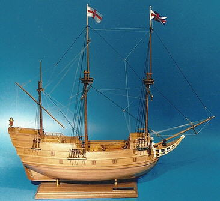

John Alden – Mayflower (1598-1687)
Married 1621 Plymouth, MA
Born in Harwich, Essex, England
Died in Duxbury, MA
Signed Mayflower Compact
Made famous by Longfellow’s “The Courtship of Miles Standish”
Back to family tree — John Alden
Morse Foster-Lambert Line
Priscilla Mullins- Mayflower (1600-1685)
Married 1621 Plymouth, MA
Born in Surry, England
Died in Duxbury, MA
Made famous by Longfellow’s “The Courtship of Miles Standish”
Back to family tree — Priscilla Mullens
Morse Foster-Lambert Line
Moses Simmons
Moses Simmons came to Plymouth on The Fortune in 1621 and was likely present at the first Thanksgiving.
His daughter married Joseph Alden, son of John Alden.
Back to family tree — Moses Simmons
Morse Foster Lambert Line
Thomas (1571 1621) and Joseph Rogers (1602-1677)
Mayflower Passengers
Thomas signed the Mayflower Compact
Back to family tree — Thomas Rogers
Rogers Phinney Leavitt Hancock Foster Morse
Stephen Hopkins – Mayflower
Signed Mayflower Compact
Upper Clatford, Test Valley Borough, Hampshire, England
Traveled to Jamestown, VA in 1610, came back (1614) and was recruited for the Mayflower, partially because of this. Shakespeare wrote “The Tempest” about his ship’s wreck on the way to Jamestown. He was “Stefano” in the play.
Sentenced to death for Mutiny but pardoned.
Spouse died before Mayflower trip
Owned a tavern (Ordinary) in Plymouth and was fines for serving beer and wine on the Lord’s day.
Back to family tree — Stephen Hopkins
Morse Foster-Lambert-Strout-Snow-Hoskins line
Constance Hopkins – Mayflower
Daughter of Stephen Hopkins was baptized on 11 May 1606 and died in Eastham, Plymouth Colony, in mid-October 1677. She was a Mayflower passenger in 1620. By 22 May 1627 she had married Nicholas Snow in Plymouth and had twelve children. Her husband was a passenger on the ship Anne in 1623 and died on 15 November 1676. Both Constance and Nicholas were probably buried in Cove Burying Ground, Eastham, where memorial plaques for each were placed in 1966 by descendants of Stephen Hopkins.
Back to family tree — Constance Hopkins
Morse Foster-Lambert-Strout-Snow-Hoskins line
Francis Eaton – Mayflower passenger
1596 (Bristol, England -1633 (Plymouth)
Signed mayflower Compact
Was the ship’s carpenter working for Merchant Adventurers – mayflower Funders. (Not religious)
Died penniless and in debt.
Eaton-Lake-Pettingill Foster Morse Line
Back to family tree — Francis Eaton
Nicholas Snow
Arrived 1623 on the “Anne”
Original Settler Eastham, MA
From Hoxton, England
Morse Foster-Lambert Line
Back to family tree — Nicholas Snow
John Otis
Original Hingham (Called Bear Cove then) Settler
Arrived on the ship Lyon around 1631
30 pounds was the fee to take the family to Massachusetts from Bristol, England.
Lived on Otis Hill which is still called that.
Farmer
Moved to Weymouth late in life.
Morse Foster-Lambert Otis Line
Back to family tree — John Otis
Thomas Loring (Deacon)
Thomas arrived in America on the 23rd December, 1634 and joined the church colony at Hingham, which had come from Hingham, Norfolkshire, under the lead of an Independent minister. Rev. Robert Peck.
Had the first license to sell “Wine and Strong Water”
Morse Foster-Lambert Line
Matthew Cushing, Deacon
Matthew Cushing, (The first Cushing to settle in Hingham, MA) son of Peter Cushing (c. 1562-1615) and Sarah Hawes (c. 1563-1641). Matthew was born around 1588 and lived much of his life in Hingham, Norfolk, England. In 1613 he married Nazareth Pitcher (c. 1586-1681). The family came to Massachusetts in 1638 on the ship Diligent. It is possible that they decided to leave England due to religious persecution. Prior to their arrival Matthew had been allotted several plots of land. He chose to build his homestead on Main (Bachelor) Street below Pear Tree Hill. During his time in Hingham Matthew was deeply engaged in the town’s public affairs and also served as a church deacon. He died on September 30, 1660 at the
age of seventy-one and was buried in Old Ship Cemetery
Back to family tree — Matthew Cushing, Deacon
Morse Foster-Lambert Line
James Otis, Rev. Dr.
James Otis Dr (1734 - 1807) was the son of Dr. Isaac and Deborah (Jacobs) Otis of Scituate.
Dr. Otis was the third physician of Scituate, MA and commenced practice about 1760. He was in the French War and served as surgeon's mate at Crown point in 1758, in Colonel Bayley's regiment. In 1774 he was on a committee appointed by the town, which reported that 'the arbitrary measures of the British Parliament are subversive of those rights and liberties which our fathers have handed down to us.' He was also one of the Scituate Committee of Inspection, who reported all who were inimical to the Continental Association.
Revolutionary War Veteran
Back to family tree — James Rev Dr Otis
Morse Foster-Lambert Line
James Otis 1725-1783
2nd Cousin 7x removed
Killed by lightening.
“Taxation without representation is tyranny”
“Now one of the essential branches of English liberty is the freedom of one's house. A man's house is his castle, and whilst he is quiet, he [should be] as secure in his house as a prince in his castle.
Are not women born as free as men? Would it not be infamous to assert that the ladies are all slaves by nature?”
Morse Foster lambert Otis
John Emerson,
son of Thomas and Elizabeth Emerson
Born in England 1625
Died in Gloucester, Mass. 2 December 1700.
Came to America between 1636 and 1638 with family.
He married Ruth Symonds, a daughter of Hon. Samuel and Martha (Reade) Symonds. She died at Gloucester 23 February 1702. They resided at Gloucester. Mr. Emerson was freeman at Ipswich 19 December 1648; was the first Emerson graduated from Harvard in 1656; was ordained 6 October 1663, and settled at Gloucester as the first minister of the town. There he remained till death.
In July 1661, His salary was 60 lbs of Indian corn, pense, barley, fish, mackerel, and beef or pork. In 1672, his salary was changed to include 1/8 to be paid in money. In 1678, additional changes to his salary included another 1/8 to be paid in money and firewood.
Pettingill – Hill – Bray -Emerson Line
Follow this line down and eventually you’ll find Ralph Waldo Emerson as a distant cousin.
Back to family tree — John Emerson Reverend
James Ensign 1590-1670
Arrived new World 1630
Settled in Hingham but became one of the original founders of Hartford CT (1636)
Inscribed on the Founders Memorial in Hartford
He and his wife, Sarah, were original members of the South Church
Buried in Center Church Graveyard, also known as The Ancient Burying Ground.
Foster- Lambert – Otis
Back to family tree — James Ensign
John Ensign 1644 – 1676
Scituate, MA
Died in the Battle of Rehobeth during King Phillips War (Colonials vs. Indians)
Foster- Lambert - Otis
Back to family tree — John Ensign
Thomas Bray
1615 to 1691
9th Great Grandfather.
Came to Plymouth around 1639-1640. Possibly earlier as his father died in Scituate, MA in 1639. Family came to Boston in 1634.
Convicted of Adultery in Plymouth and eventually had to get away…
Thomas BRAY of Yarmouth, "a single person," and Anne LINCEFORD (wife of Francis) are changed with Adultery and Uncleanness. They both confess and are sentenced to be severely whipped at the public post (presumably in Plymouth) then again at Yarmouth. In addition, they must wear the letters "AD" (for Adulterer) on a conspicuous part of their upper garments as long as they are in the colony. If they fail to do so, they shall be whipped on each such occasion. He moved in 1642 to Cape Ann Side (later Beverly), Salem, Massachusetts Bay Colony. (1242) Thomas settled near the Gloucester meeting house.
(One of the original Gloucester settlers.
Veteran of King Phillips War
Back to family tree — Thomas Bray
Bray Hill Pettingill Foster Morse
Nicholas Bray
1752-1843
Born in Minot, ME
Lived in Harrison ME
Revolutionary War veteran
Private in Barnabas Dodge’s Company, Col Loammi Baldwin’s Regiment, Massachusetts Militia.
Until the end of 1775, Baldwin and his men remained near Boston, but in April 1776, he was ordered with his command to New York City. He took part in the Battle of Pell's Point on October 18, 1776. This battle delayed the British advance, thus main American army under Washington was able to safely evacuate from Harlem (on the island of Manhattan) to White Plains.
On the night of December 25–26, in the face of a violent and extremely cold storm of snow and hail, General Washington and his army crossed the Delaware to the New Jersey side, and fought the Battle of Trenton on the morning of December 26. Baldwin and his regiment participated in both the crossing and the fight.
Pettingill – Hill – Bray Line
Back to family tree — Nicholas Bray
David Pettingill 1734-1778
Revolutionary War casualty
Died at the Battle of Saratoga.
His wife was Mercy Lake, descendant of Francis Eaton
One of the first 2 settlers of Lewiston, ME
Back to family tree — David Pettingill
See separate page for him.
Joel Thompson
Joel Thompson – Early Lewiston Settler and Revolutionary War veteran. He settled on what is even now known as the Thompson place, on the Webster road.
Captain James Curtis Company, James Cargill’s regiment – defended the seacoast.
Pettingill – Hill - Thompson Line
Back to family tree — Joel Thompson
William Henry Lambert 1843-1890
Civil War, 19th Massachusetts regiment
Fought at Antitam, Gettyburg (Copse of trees against Pickett’s Charge. Captured by the Confederates at Petersburg, VA - Battle of Jerusalem Plank Road on June 22, 1864 Released months later in a prisoner swap.
Foster Lambert Line
Back to family tree — William Henry Lambert
George Sumner Pettingill (2nd Great grandfather)
1843-1923
Paid for a “Furnished Substitute” to go to the Civil War in his Place (Moses King Jr.)
His 2nd Great Grandfather died in war.
Back to family tree — George Sumner Pettingill
John Lambert – 1630-1667
Born onboard ship enroute to Essex, MA (1630)
Back to family tree — John Lambert
Foster – Lambert
John Perkins – Arrived 1630 to Nantasket then to Boston
Brown Line See Below
Samual Symonds
Born Yeldham, Essex County, England
Arrived Ipswich, MA 1638
Lt Governor Massachusetts
Pettingill Hill Bray Emerson Symonds Line
Back to family tree — Samual Symonds
William Golder 1759–1846
Born Long Island, NW, Settled in Lewiston
Lived next to David Pettingill in 1790
War 1812 Veteran (Private)
Captain George Williams Company, Col W.H. Blaisdell’s Regiment. Served in Brooklyn Heights, NY
Back to family tree — William Golder
Pettingill Golder Line
Ebenezer Dennett
BIRTH 31 AUGUST 1757 • Lyman, York County, Maine,
DEATH 22 APRIL 1834 • Lewiston, Maine,
4th great-grandfather
Revolutionary War veteran
Continental Army, Marched from Wells, ME to Camp Totaway, under Captain Soper,
Back to family tree — Ebenezer Dennet
Pettingill Golder Dennett line
John Dill
BIRTH 1738 • York, York, Maine
DEATH FEBRUARY 20, 1808 • Lewiston, Androscoggin, Maine
5th great-grandfather
Revolutionary War veteran
He served in the Revolutionary War under Capt. John Worthey in Col. Edmund Phinney's (31st) Regiment. He enlisted 14 May 1775 and is mentioned in the company return of Oct. 1775 at Cambridge and on 2 Nov. 1775 at Fort No.2 in Cambridge. (1) Worthley's company was enlisted at North Yarmouth beginning 24 Apr. 1775. Muster Roll of Capt. John Worthley's Company in the 31st Regiment of Foot in the Continental Army encamped at Cambridge, Fort No. 2... John Dill, North Yarmouth, enlisted May 14, 1775
Back to family tree — John Dill
Dill Golder Pettingill Foster Morse
Rev. John Brown
BIRTH 9 MARCH 1627 • Wycombe District, Buckinghamshire, England
DEATH 13 SEP 1677 • Providence, Rhode Island,
Early founder of Providence.
Providence City Council with John Williams.
His land is where Brown University is now – His great grandson laid the cornerstone and donated well. So the former College of Rhode Island became Brown University.
Back to family tree — Rev. John Browne
Brown Pray Roberts Dennett Golder Pettingill.
Darby Field
1610 (Boston England)
1651 – Portsmouth, NH
Indian Translator for Withrop and Saltonstall
First to climb Mt Washington (Agiocochook) to prove to Passaconaway, head of the Abenaki tribe, that were not afraid of nature or their gods. So he climbed the throne of their gods.
This also helped in Mapping the area.
Per chance – Lindy and I stayed at the Darby Field in in NH without knowing the connection.
Field Roberts Dennett Golder- Pettingill.
Back to family tree — Darby Field
Ichabod Corbett
1756–1829
BIRTH 25 APRIL 1756 • Mendon, Massachusetts.
DEATH 19 FEBRUARY 1829 • Milford, Massachusetts,
5th great-grandfather
Revolutionary War Veteran. Marched to Cambridge in response on Aril 19th, 1775 (Lexington/Concord). Also fought along the Hudson River.
Spouse was Olive Lazell from Hingham.
Corbutt Thompson Hill Pettingill
Back to family tree — Ichabod Corbett
Abraham Lincoln
1809–1865
Abraham Lincoln
1809–1865
6th cousin 4x removed
President of the United States
His 4th Great Grandfather was the brother of our 8th Great Grandfather Daniel Lincoln of Hingham, MA
Lincoln Lazell Corbutt Thompson Hill Pettingill
Edward Lincoln
1 Jun 1580 – 11 Feb 1640.
4x great-grandfather of Abraham Lincoln, 16th President of the United States.
Back to family tree — Edward Lincoln 4x GreatGrandfather of 16th Pres. of USA
Mary Woodwell
1730 -1829
6th Great Grandmother.
Mary Woodwell and her family were captured by Indians, April 22, 1746, from her father's farm in Hopkinton, New Hampshire and marched for 12 days to Canada . After many years as a captured servant, she found her freedom, married and eventually moved to Canterbury
Her mother died in captivity. Her father was released and bought her freedom for $18.50. She spent 3 years in captivity
Married Jesse Corbett.
After the death of her second husband (Fowler) she became a Shaker for the last 25 years of her life.
“Mary Woodwell, a Medley” is a book written about her time in captivity.
Pettingill Hill Thompson Corbett Woodwell
Back to family tree — Mary Woodwell
John Hancock 1736–1793
BIRTH 12 JAN 1736 • Braintree, Suffolk, Massachusetts,
DEATH 8 OCT 1793 • Braintree, Norfolk, Massachusetts,
4th cousin 6x removed
Pettingill – Lambert Otis -Jacob
Jacob – Hawke – Hancock
Robert Cross
Robert Cross was born on January 21, 1642, in Ipswich, Massachusetts.
He married Martha Treadwell on February 19, 1664, in his hometown. He was an alcoholic that got in much trouble with the law for stunts while drinking, including time in the stocks for desecrating an Indian grave. He died on October 29, 1710, in Ipswich, Massachusetts, at the age of 68.
Cross Caryl Pettingill Woodwell Corbett Thompson Hill Pettingill
Back to family tree — Robert Cross
Morrill Hobbs
1753–1826
BIRTH 23 NOV 1753 • Berwick, York, Maine,
DEATH 20 OCT 1826 • Harrison, Cumberland, Maine, USA
5th great-grandfather
Revolutionary War veteran
His Company was likely assigned to contribute to the Siege of Boston and was at the Battle of Bunker Hill (Actually the next hill over – Breed’s Hill). No known engagement with the British.
Served in the Battle of Saratoga (3rd York County Militia Regiment)
Pettingill Hill Bray Hobbs
Back to family tree — Morrill Hobbs
Thomas Brackett 1638–1676
BIRTH 1638 • Strawberry Bank, Rockingham, NH
DEATH 11 AUG 1676 • Falmouth, Cumberland, Maine
9th great-grandfather
Killed by Indians in King Phillip’s War
Children and wife taken by Indians and brought to Canada. One Married an Indian and later came back to claim a share of her father’s estate. Wife died in captivity. The Children were ransomed by their grandfather. The Ransomed son is our 8th Great Grandfather.
His father Anthony came in 1623 to Rye, NH (Now Odiorne State Park) on the ship “Jonathan
Brackett Hobbs Bray Hill Pettingill
Back to family tree — Thomas Brackett
George Cleeve
11th GGF (ca. 1586- after 1666) was an early settler and founder of Portland, Maine. He was Deputy President of the Province of Lygonia from 1643 until the final submission of its Maine towns to Massachusetts authority in 1658.
Born about 1586 in Stogursey, Somersetshire, England, he came to New England in 1630, settling first at Spurwink (near today's Cape Elizabeth), and at today's Portland in 1633. In 1637, Sir Ferdinando Gorges granted Cleeve and associate Richard Tucker 1,500 acres (6.1 km2) at Machegonne (Portland Neck) that included the area of today's downtown Portland.
His career was both contentious and litigious, engaged in frequent land disputes and vying with Gorges' Province of Maine for jurisdiction over the area north of Cape Porpoise.
Back to family tree — George Cleeve Cleeves
Cleeves Brackett Hobbs Bray Hill Pettingill
Jonathan Nason
1641–1691
BIRTH 1641 • Kittery, York, Maine
DEATH 1 MAR 1691 • Piscataqua River, Kittery, York, ME
9th great-grandfather
Killed in a canoe with an Oar by his brother Baker on the Piscataqua River, supposedly in self-defense. Fittingly, Jonathan is an ancestor of Stephen King. That means Stephen is likely a cousin.
Nason Emery Brackett Hobbs Bray Hill Pettingill
Back to family tree — Jonathan Nason
Richard Nason
1606-1696
Arrived 1638
10th GGF
In 1645 he and his wife had a dispute with her father, Richard Baker, who was tried in New Hampshire and fined 5 shillings "for beating Richard Nason that he was black and blue and for throwing a fire shovel at his wife.
In 1655 he was charged at York with not attending church meetings and in 1659 was fined œ5 and disenfranchised for entertaining Quakers. In 1665 he was accused of blasphemy. Philip Chesley of Oyster River was witness against him. The General Court did "not judge him so guilty of that fact as that by our lawe he ought to die," but he had to post a œ40 bond for good behavior. The inhabitants of Kittery elected him Deputy to the General Court the following year, but the court refused to seat him and called the people of Kittery to account for electing him. He owned 200 acres, and in his old age lived with his son Benjamin in York County, Maine.
Nason Emery Brackett Hobbs Bray Hill Pettingill
Back to family tree — Richard Nason
William Gowen 1634–1686
BIRTH 1634 • Scotland
DEATH 2 APRIL 1686 • Kittery, York County, Maine, United States of America
9th great-grandfather
William Gowen left Scotland aboard the Unity as one of about 150 prisoners of war following defeat by Cromwell’s forces (English) in the Battle of Dunbar. He was a “Highlander”
All the Scotchmen brought in the two ships above
mentioned were sold to planters and others who needed workmen throughout New England. The usual price paid was twenty pounds per man, and after working from five to eight years, nominally to pay their passage money, and to learn some trade as apprentices, they were given their liberty. Many of them received grants of land
in the towns where they had worked
In 1676, under an alias, bought land near the mouth of the Kennebec, including Small Point (Where Hermit Island is)
His wife Elizabeth Frost’s mother and sister were captured and killed near Kittery by Indians in 1650.
Original settler Eliot, ME
Gown Thompson Brackett Hobbs Bray Hill Pettingill
Back to family tree — William Gowen
David Sleeper
BIRTH 26 NOV 1721 • Kingston, New Hampshire
DEATH 18 OCT 1786 • Cartter, New Hampshire
5th great-grandfather
Revolutionary War Veteran
Actively fought in the battle of Bunker Hill where his son was wounded.
His commander, William Prescott, famously said "Do not fire until you see the whites of their eyes"
Prescott's men twice threw back British assaults on the redoubt but when the British made a third attempt on the ammunition-less forces, he ordered a retreat while parrying bayonet thrusts with his ceremonial saber. While the British successfully captured Bunker Hill, the poorly organized and untrained colonial forces inflicted significant casualties (50% casualties under General Howe), and the British were unable to capitalize their victory. Prescott received a colonel's commission, and his unit became the 7th Continental Regiment. The regiment saw service in the 1776 defense of New York.
Back to family tree — David Sleeper
Sleeper Pettingill Foster Morse
Thomas Sleeper 1616-1696
He came from Shropshire, England, sailing on the ship "Providence" out of Bristol, England on June 14, 1646.
King Philip's War. During this war "there appears to have been a plot to burn the home of Thomas Sleeper, a frontier house in the easterly part of town. About nine o'clock in the evening of the first Saturday night of November, 1675, an Indian was discovered passing from the barn about eight rods distant, towards the house, with fire in his right hand—'in appearance about the bigness of an egg'—and straw under his left arm. When about midway between the two buildings he was fired upon from the house and immediately fell. The straw took fire and blazed up and by the light of it another Indian was seen running away between the fire and the barn. The fire soon went out having done no harm. The people in the house, fearing that others might be lying in ambush, dared not go out in the night to the place where the Indian fell. In the morning no dead Indian was to be found, but pieces of birch bark lay scattered all about where the fire had been kindled.
Back to family tree — Thomas Sleeper
Sleeper Pettingill Foster Morse
Pettingill first cousins married
David Pettingill married Mercy Lake
Two of their children were:
David Lake Pettingill and Mary lake Pettingill
They had a son - John G Pettingill
Mary Lake Pettingill married John Harris
They had a Daughter - Mary Harris
Mary Harris and John G Pettingill married
They had a son John Harris Pettingill
Thus John was 25% Pettingill on BOTH sides
Both his parents were 50% Pettingill
Or instead of the normal 8 great grandparents he had 6.
No, this isn’t the deep south!
Morse Foster Pettingill
Joseph Morse
1613–1654
BIRTH 2 MAY 1613 • Redgrave, Suffolk, England
DEATH 20 JUN 1654 • Dedham, Norfolk, Massachusetts
9th great-grandfather
Arrived in 1635 to Watertown.
Original settler (with his brother) of Dedham, MA
This is on the Pettingill side of the family
Back to family tree — Joseph Morse
Morse Lawrence Harris Pettingill Morse
Richard Swain / Swane Sr
1601–1682
BIRTH 15 SEPTEMBER 1601 • Rowland, Derbyshire, England
DEATH 14 APR 1682 • Nantucket, Island, Dukes, County, New York, USA
9th great-grandfather
Arrived 1634 – went to Rowley, MA first, then to to Newbury then was an original settler of Winnacunnet (Hampton, NH – October 1638)
In 1659 he and his son, John Swain, were two of the ten original purchasers of Nantucket Island from Thomas Mayhew for thirty pounds silver and two "Beaver Hatts".
When did Nantucketers become Quakers? - Nantucket Historical Association
He died and is buried on Nantucket.
There once was a man from Nantucket
Back to family tree — Richard Swain \ Swane Sr
Swain Jenness Sleeper Pettingill Foster Morse
Captain Eben Ward
BIRTH 1750 • Salem, Essex, Massachusetts, United States
DEATH 25 DEC 1774 • At sea
Lived in Georgetown, ME
Married Elsie Grace 1 May 1773
The had one Child born in may 1775
Captain Ward died in a shipwreck off of Long Island Christmas day 1775, widowing Elsie with a 7 month old.
Morse Brown Ward
Thomas Williams
1697-1734
7th GGF
Came from England 1717.
Taught Latin in Boston
He was a Physician
THE original settler of Bath, ME
Lived in Winnigance, remaining there became the first settler of Bath, ME.
His son petitioned for a new Parrish in Georgetown which became the town of Bath.
Back to family tree — Thomas Williams
Williams Aubens Owen Emmons Brown.
John Owen
1723–1784
BIRTH 5 DEC 1723 • Falmouth, Cumberland, Maine,
DEATH 1784 • Topsham, Lincoln, Maine
6th great-grandfather
Served in Captain Moses Pearson’s Company
French and Indian War.
Louisburg (Cape Breton) expedition of 1745
The fortress at Louisburg, Cape Breton, had cost the
French about six million of dollars, and Maine has reason
to be proud of its part in the capture (46 day siege)
Back to family tree — John Owen
Owen Emmons Brown Morse
Philip Hodgkins 1689–1756
BIRTH 25 JAN 1689 • Gloucester, Essex, Massachusetts
DEATH 1756 • Falmouth, Cumberland, Maine
7th great-grandfather
Philip Hodgkins a Private in Capt Crabtree's Company (service not given) reported as having refused to take the oath and as confined by order of the Colonel; company stationed at Frenchman's Bay for defense of seacoast
Back to family tree — Phillip Hodgkins
Hodgkins Owen – Emmons - Brown
Benjamin Rockwood
(1651 - 1747) 8th GGF
King Phillip’s War
Benjamin (son of Nicholas) Rockwood (Rockett) went as a soldier to the eastward in Philip's War: July 1677 Ben. Rockett (Rockwood) of Medfield is reported wounded at Black Point, in Scarboro, two shots in the thigh. He never fully recovered.
At Blackpoint under command of Capt. Swett
the English lost about forty men whereof were eight of our friendly Indians.
From the Commander:
“Reward of twenty shillings for every scalpe & forty shillings for every prisoner or ye prisoner.”
Hostile Indians had come from the Kennebec and Androscoggin.
The Indians, that had hid themselves in the swamp on each side of the hill, suddenly fired upon the English on both sides, which not a little discouraged his young and undisciplined company, so as they could not, or did not keep their ranks
Swett fought the enemy hand to hand; displaying upon the spot and in a retreat of two miles, great presence of mind as well as personal courage, in repeated rallies of his men, in his exertions to bring off the dead and wounded, and in defence of his rear, upon which the savages hung with destructive fury. At last, wounded in twenty places, and exhausted by loss of blood and by fatigue, he was grappled, thrown to the ground, and barbarously cut in pieces at the gates of the garrison.
Garrison Lane and Massacre Lane goes east from Black Point Road (Maine highway 207) about 1/3 mile north of Prouts Neck, which is the narrowest part of the Black Point penninsula, and Massacre Pond lies along the east side of Black Point Road a little farther north of Prouts Neck. This is just north of Old Orchard Beach.
Rockwood Metcalf Cook Owen Emmons Brown Morse
Back to family tree — Benjamin Rockwood
Hanna Willix
(1600 - 1648)
10th GGM
June 1648, when daughter Hazelelponah was 12 years old, her mother was waylaid on the road from Dover to Exeter, robbed, and murdered. Her body was thrown into the river. Husband Balthazar, who had been active in colonial politics and had been one of the signers of the 1643 Exeter Petition to the General Court of Massachusetts requesting that Exeter be admitted to Massachusetts, appears to have been crushed by the tragedy. On September 7, 1648, he filed suit in Norfolk County Court at Hampton against Robert Hithersay:
For raising an evil report of his deceased wife, and for breach of promise in carrying his wife to Oyster River in a canoe and not bringing her in a conoe again."
The book “The Strange death of Mistress Coffin” by Robert J Begiebing (1991) is about this murder.
One commentator remarks that "Hithersay, who roved from Concord to Lynn, Exeter, and York, was apparently a wayward character, and may have been suspected of the murder."
1648 scene report:
Hannah “was founde in the [Piscataqua] River dead; her necke broken, her tounge black and swollen out of her mouth & the bloud settled in her face, the privy partes swolne &c as if she had been muche abused &c.”
Willix Gee Hodgkins Owen Emmons Brown Morse
Back to family tree — Hannah Coffin (Willix)
Daniel Forbush (Forbes)
1620–1687
BIRTH 1620 • Kinellar, Aberdeenshire, Scotland
DEATH OCT 1687 Marborough, MA
8th GGF
Scottish POW of the Battle of Dunbar (Cromwell)
Sent to the colonies.
Settled in Cambridge, MA
Back to family tree — Daniel Forbush
Forbush Cook Owen Emmons Brown Morse
Osmond Dutch
1601-1684
Came to America 1630 (Gloucester, MA)
One of the original 11 fishermen in Gloucester, MA
Spouse and Children came in 1638
10th GGF
Wife was accused of being a witch 40 years before the famous witch trial. Sued for defamation and won.
Back to family tree — Osmund Dutch
Morse Brown Emmons Owen Hodgkins Dutch
Arsenault and GUERIN
Estimate 1650-1654 Arrival to Nova Scotia (Port Royal)
Ships began to arrive in 1632 that included women and children. The survival of the Acadian settlements was based on successful cooperation with the Indigenous peoples of the region. In 1654 Acadia was first conquered by English forces from Boston, occupying the colony.
There were seventy to eighty families in the Port Royal area in 1665
Arsenault – Morse
Jean Baptise Pitre 1730–1798
BIRTH 1730 • Cobequid, Acadia, Nova Scotia, Canada
DEATH 1798 • Rustico, Queens, Prince Edward Island
5th GGF
While still in Acadia, around 1752, Jean Baptiste married Elisabeth Robichaud, the daughter of Alexandre Robichaud and (unknown) Bourg. As the political situation worsened they sought refuge on Ile St. Jean where a daughter Marie Josephe was born in 1755. By the time the British began to clear the island Jean Baptiste had probably sought escape in Restigouche where, now a widower, he married for a second time to Marguerite Arseneau. His sister, Anne Marie, also married on the same date to Charles Robichaud. Charles was the brother of Jean Baptiste’s first wife.
When the British raided Restigouche in 1761 Jean presumably escaped and he and Marguerite eventually made their way back to Ile St. Jean, as he is listed along with the four Gallant brothers as the residents of Rustico in 1763. He and Marguerite raised at least five sons and a daughter there and died sometime after the 1798 census of Rustico.
This Jean Baptiste, the great-grandson of the original Jean, is the progenitor of the majority of the Pitres/Peters of Prince Edward Island.
Parents:
Continues next page, right column.
About 1729 in Cobequid Jean Marc married Judith Theriot, the 18-year-old daughter of Pierre Theriot and Marie Bourg (Eight years earlier Judith’s older sister Marguerite had married Jean Pitre, Jean Marc’s first cousin.)
The family established themselves near Cobequid for the next twenty years. But by 1752 they were known to be refugees at Aulac. The listing showed Jean Pitre, wife, 3 boys & 5 girls. They were at Gaspareau in 1754-55 and at Miramichi in 1761 with only one son. The family was also at Camp d'Espérance, Miramichi, which was established at the end of the summer of 1756 to protect from famine and from the roundups of the British soldiers the approximately 1250 Acadians who fled there.
In July 1762, Jean Marc (Jean Baptiste) appeared on a list of prisoners at Fort Edward with one person, likely Judith, since the following month, she was recorded on a list of prisoners as widow Jean Marc with another person. Therefore Jean Marc died between July and August 1762 at Fort Edward, which had been built by the British in 1750 at Pisiquid (now Windsor, Nova Scotia). It appears likely that mother Judith was sent back to France by the British.
Grandparents arrive around 1650, before an earlier version of the British shut down French Immigration in 1655.
Morse Arsenault Peters (Pitre) Gallant is also common in the line.
Michel Leneuf de la Vallière de Beaubassin
Michel Le Neuf de la Vallière de Beaubassin (the elder) (1640 – 1705) was a military figure who became a governor of Acadia under French control. He was the son of Jacques Leneuf de La Poterie and Marguerite Legardeur, who both originally came from Normandy and together with their extended families settled in Canada.
The Le Neuf family came from Caen, France, and settled in Trois-Rivières, Canada, in 1636. They were the first nobles to settle in New France and held positions of power and prestige through several generations.
Back to family tree — Michel Leneuf DeLaValliere DeBeaubassin
Morse Arsenault Peters (Pitre) Gallant
Jacques Leneuf de La Poterie
(November 7, 1604, in Caen, Normandy - died some time after November 4, 1687, in Canada) was a fur merchant, businessman, seigneur, and co-founder and director of the Communauté des habitants, in the colony of Canada. He arrived in the colony in 1636 with the rest of his family, which included his elder brother Michel Leneuf, and together they, alongside their in-laws the Legardeurs, were the first of the French nobility to permanently settle in New France.
He married Marguerite, the sister of Pierre Legardeur de Repentigny, while in France, and they were the parents of several children, including the future Governor of Acadia, Michel Leneuf de La Vallière et de Beaubassin.
Morse Arsenault Peters (Pitre) Gallant
Communauté Des Habitants (Company of Habitants): Supplied ships and provisions to transport a certain number of colonists to settle in the territory every year, as well as covering all administrative costs for the colony, and in return were granted a monopoly on virtually the entire fur trade in Canada
Morse Arsenault Peters (Pitre) Gallant is also common in the line.
Back to family tree — Jacques Leneuf de La Poterie
John Gager 1620 1703
8th GGF
He was the son and only child known to have survived of William Gager and Hannah Mayhew. He was born in Little Waldingfield, Suffolk, England.
He came on the Winthrop fleet in 1630
He was only 10 years of age when his father died, and he probably lived with the Winthrop family. When John was only 17 years of age, he left the Massachusetts Bay area for the settlement of Connecticut with John Winthrop Jr., who had been instructed to plant a colony and build a fort at the mouth of the Connecticut River (Saybrook) because of the threat of indian uprising.
John Winthrop left him a cow in his will.
John Gager was a participant in the war with the Pequots, and for this he was awarded a land grant from the town of New London, of 200 acres east of the river. It was near the straits which is now part of Ledyard. John Gager moved there about the year 1650, and his first six children were born there.
John Gager and his family later joined in the settlement of Norwich, Connecticut. (original Settler) His house lot in the new town bears the date of the oldest surveys November 1659.
He died in 1702 (Norwich, CT)
Back to family tree — John Gager
Gager Forbes Bishop Perkins Brown Morse
Sir John Perkins
1583 in Hillmorton, Warwickshire, England
Died1654 in Ipswich, MA
John Perkins migrated to New England in 1631 on the first trip of the Lyon. The passage was stormy and lasted 67 days.

(10th generation) has lineage to the Plantegenet Line
King William I Conqueror of England 1024-1087
King Henry I 1068-1135
Matilda Plantagenet 1102-1167
King Henry Plantagenet II 1132-1189
King John Plantagenet 1167-1216 (Robin Hood)
King Henry III Plantagenet 1207-1272
Beatrice Plantagenet 1242-1275
Pierre DeBretagne 1272-1312
Pierre DeMorlauix (1320 - 1384)-
Henry Perkins (1340 - 1374)
John Perkins (1360 - 1399)
William Lord Ufton Perkins (1380 - 1451)
Thomas Perkins (1400 - 1479)
William Perkins (1430 - 1495)
Thomas Perkins (1458 - 1528)
Henry Perkins (1484 - 1546)
Thomas Perkins (1525 - 1592)
Henry Perkins (1555 - 1608)
John Perkins (1583 - 1654)
Perkins – Brewer (Perkins on that side too) – Brown - Morse
Sir John Perkins sons Jacob and John Jr families on both sides of Matthew Perkins and Mary Brewer (6th GG parents)One of the 1620 Monhegan settlers was the Brown family, originally from Scotland.
The Brown family were the original settlers of New Harbor, ME, in 1620. In 1625 John Brown bought from the Sagamores, Captain John Somerset and Unnogoit, the present territory of the towns of Bristol and Damariscotta.
In 1630 Colonel David Dunbar led a group of Scottish Settlers to settle in Boothbay (which was called Townsend then).
Descendant Edmund Brown moved with Dunbar from New Harbor to Boothbay and later (1639) committed the first murder there. He had gone with a friend to Pemaquid in order to get supplies and alcohol. After drinking with the friend all night long they got into an argument and Edmund killed his friend with an ax blow to the head. Edmund Brown died in jail, leaving behind wife and children from who the Maine Browns are descended.
The Browns remained in the Boothbay area for the next 400 years.
Sources:
Lincoln County, Maine Genealogy and History.
History of Pemaquid Maine - The Story of Pemaquid (University of Maine) John Otis
Embracing Family Genealogies and Biographical Sketches
From The First Permanent Settlement In
1730 To Recent Times.
BY FRANCIS B. GREENE
Member of the Maine Historical Society; Author of the History of Boothbay, Southport and Boothbay Harbor, Maine. 1934.
Back to family tree — Sir John Perkins Sr
Brown - Morse
Brown Family History
1605 First English ship (ARCHANGEL, Commanded by George Weymouth) lands on Monhegan and then Boothbay Harbor. In Boothbay they were visited by 28 friendly Indians. Unfortunately, Captain Weymouth took 5 Indians and their canoes onto his ship and took them back to England to show them off.
In 1606 Lord Popham sent a ship to explore and colonize what Captain Weymouth had discovered but the ship was captured by the Spanish and the passengers and crew were imprisoned.
In 1607 Lord Popham sent the ship “Mary and John” under the command of George Popham. They first landed on Monhegan Island but then settled in Popham where they built a fort and church. Unfortunately, George Popham died right after establishing the colony. This put the colonists into a state of disarray. The Popham colonists were then driven out by the Indians and the site left abandoned.
In 1610 Abraham Jennens, a fish merchant from Plymouth, England landed on Pemaquid but was attacked by Indians (because of Weymouth taking Indians captive 5 years before). He managed to escape with 2 more Indian captives. This completely destroyed the Indian’s trust of the white man.
In 1919 Captain Thomas Dermer was sent by Lord Gorges, who wanted to establish a colony on the Maine coast, to return the 2 Indians in order to restore relations with the tribes. Captain Dermer landed on Monhegan and returned Samoset, one of the Indians previously taken captive, to his tribe.
On Monhegan he left on the island a few of the settlers
who had accompanied him, and then returned to the coast to get water and provisions when the Indians, who as yet were ignorant of what he had just done (return Samoset), attacked while he and his crew were taking water on board the ship. All his men were killed; and Captain Dermer was so badly wounded that he died shortly after. The only survivor of the crew escaped and succeeded in making his way back to Monhegan Island.
During the winter of 1620 those planters who had been left on Mohegan by Captain Dermer, departed for the mainland, believing there was no longer anything to be feared from the savages, and settlements sprang up at Pemaquid, Sagadahock (East of the Kennebec River), and some of the islands in Boothbay Harbor. These villages increased so rapidly that we find it set down in the year 1622, that no less than thirty vessels entered
Damariscove (Island just south of Southport) Harbor, and to this area came Governor Winslow of the Plymouth
Plantation in search of food for the starving people on the shores of Cape Cod.
Isabella Bland (Leavitt)
1614 – 1699
10th GGM
Born In Colchester, England
Isabella Towle was persecuted for witchcraft. She and Rachel Fuller were accused in the summer of 1680 after the death of a child of John Godfrey. Rachel confessed and accused Isabella. both were committed to prison where they remained until the sitting of the Hampton Court, September 7, 1680. The court ordered that they continue in prison until bond be given for their good behavior of 100 pounds each. John Fuller became a bondsman for his wife, and Isaac Marston and John Redman for Isabella (it is likely that her husband was not able to raise the required bond). They were discharged at the Dover court in 1681
Bland Leavitt Hancock Foster Morse
Back to family tree — Isabel Austin Bland
Captain John Phinney
1693 – 1780
7th GGF
The original settler of Gorham, ME
May 1736 his grandson John Phinney with his son Edmund, a boy of fourteen years, left their home in Falmouth, and made their way in a canoe up the Presumpscot River to township "Narragansett Number Seven," and there established the first home in what was later to become Gorham, Maine.
The family and children, along with eight other families, moved into the fort at the beginning of the French and Indian War (1754), and were protected by their men and a handful of soldiers furnished by Massachusetts, against repeated attacks of the Indians for fourteen years. At one time, it was four years before they could leave the fort. (Gorham)
Mayflower Descendant (Rogers)
Back to family tree — Capt. John Phinney
Phinney Leavitt Hancock Foster Morse
Brown – 1600’s to Maine (Pemaquid/Boothbay/Bath). Tough to follow due to a fire where the records were kept (Bath) in in the 1820’s. Lots of Perkins (Ipswich). See above.
Arsenault 1880’s to Bath, ME 1640’s to Nova Scotia then Prince Edward Island (Hiding from British) along the way.
Most from Rustico, PEI where they settled in the 1750’s and stayed until around 1900. Arsenault/ Peters/Gallant.
Foster -around 1700 but the spouse’s families lead to the Mayflower and the Great Puritan Migration
Pettingill – Great Puritan Migration and the Mayflower. Ipswich/Hingham (a lot)/Scituate/Mendon, MA/ Portsmouth NH/ York, ME area and of course Lewiston.
To be a freeman in the Plymouth Colony, you had to be unindentured, no younger than 21 years, of good reputation and "orthodox in the fundamentals of religion”
Stephen Hopkins (1581 – June or July 1644) was baptized "the last of April 1581" and was a passenger on the Mayflower in 1620, one of 41 signatories of the Mayflower Compact, and an assistant to the governor of Plymouth Colony through 1636. He worked as a tanner and merchant and was recruited by the Company of Merchant Adventurers of London to provide the governance for the colony and to assist with the colony's ventures. He was the only Mayflower passenger with prior New World experience, having been shipwrecked in Bermuda in 1609 and arriving at Jamestown, Virginia in May 1610. Hopkins left Jamestown in 1614 and returned to England.
Hopkins was baptized 30 April 1581 at Upper Clatford, Hampshire, England, the son of John Hopkins and Elizabeth Williams. He died between 6 June 1644 and 17 July 1644.
Not much is known about his early life in Hampshire, but his family appears to have moved to Winchester, Hampshire, by 1586. His father died there before 4 September 1593 when his estate inventory was taken, and by 1604 Stephen had moved to Hursley, Hampshire
Recent scholars believe that this is the same Stephen Hopkins who was the only Mayflower passenger who had previously been to the New World, and that Hopkins had adventures that included surviving a shipwreck in Bermuda ("Isle of Devils") and working from 1610–14 in Jamestown.
In early 1609 Stephen Hopkins began employment as a minister's clerk, reading religious works to a congregation including members of the Virginia Company. On 2 June 1609 Hopkins left his wife and family his children being left in the care of his wife Mary Kent (who died in 1613 at age of 33 – while Stephen was away) and her mother Joan), and in his ministerial clerk's position departed for Jamestown in Virginia on the 300-ton Sea Venture, flagship of a flotilla led by Sir George Somers. The Sea Venture was carrying the new Jamestown governor, Sir Thomas Gates, to his post, as well as resupplying the colony with goods and new settlers.
After almost two months into the voyage, a severe storm separated the ships of the flotilla on 24 July 1609, and by evening the storm began raging worse and lasted for five days. Just when the Sea Venture was about to sink from storm damage, "land" was called out, with that being the island of Bermuda. The ship was forced to run itself aground about a mile offshore to keep from sinking. The castaways soon found that Bermuda was a Paradise, with plentiful water and food.
The colonists were unwilling to continue the voyage, and made repeated attempts to escape and stay in the islands. Hopkins argued that the hurricane had dissolved the settlers' indentured labour contract with the Virginia Company, as the Viginia Company had not kept its promise to deliver them safely. Each of them could, then, freely choose to accept Gates' governance, strike out alone, or join a co-operative settlement. His arguments have been interpreted as an early statement of social contract theory. This Hopkins urged secretly, and Gates considered it mutinous, as he insisted on proceeding, and had organized the settlers as a prison labour camp to prevent escapes.
On 1 September 1609, a month after the shipwreck, they had built up their ship's longboat for an ocean voyage. They sent eight men out to try to reach Jamestown to get help, but they never returned. In late November 1609, they commenced construction of boats enough to take everyone off the island. By January 1610, even though Stephen Hopkins had remained with Governor Gates's group, he started voicing dissatisfaction with the governance of Thomas Gates and questioning his authority. Hopkins was arrested and charged with mutiny and was found guilty, for which the sentence was death. Many persons begged mercy for him, and he obtained a pardon. Hopkins ceased voicing controversial issues.
The English in Jamestown and those later in Plymouth Colony were the antithesis of each other — with those in Virginia composed of titled leaders who were in charge of often inexperienced settlers as well as soldiers who were veterans of European wars, such as Capt. John Smith. All at Jamestown were focused on returning a profit to their London investors, and under great stress when no gold, minerals or anything else of much value to London was found in the Chesapeake area. The colonists could not or would not farm, tried to barter for food with the natives and later stole food from them, leading to much violence, which continued for years.
On 10 May 1610, the two newly constructed boats departed Bermuda with all on board and arrived at Jamestown eleven days later. What they found there was that the colonists in Jamestown were starving to death due to their inability and in some cases unwillingness to produce food. They were afraid to go outside their fort, so were tearing down their houses for firewood. They were not planting crops, nor trading with the natives or catching fish. Much of this had to do with some settlers feeling it was beneath their dignity to work and the violent abuse they gave the native people, which caused much enmity towards the English. At his arrival from Bermuda, Governor Gates estimated there was only days worth of food left, and decided to voyage to Newfoundland and from there find a ship heading for England. Just as they were preparing to depart, an English ship came into the harbor with supplies and new settlers, along with a new governor, Lord de la Warr. The colonists were forced to return and reestablish their fort, albeit reluctantly.
A report of the wreck of the Sea Venture and later events reached England. Most scholars believe that William Shakespeare based his play The Tempest on the report. It was first performed in November 1611. The play depicts the experiences of a group of passengers being shipwrecked by a mighty storm. A subplot involves a comic character called Stephano, who tries to take over as leader on the island. It is possible that Stephano is based on Stephen Hopkins.
While he was away, Stephen's wife Mary had survived by being a shopkeeper as well as receiving some of Stephen's wages. But she unexpectedly died in May 1613, leaving her three young children all alone. By 1614, a letter arrived for a "Hopkins" in Jamestown, and it is presumed that this is how he learned of her death, as he did return to England soon afterward to care for his children.
He then took up residence in London, and there married his second wife Elizabeth Fisher.
Although he had been through all manner of hardships and trials in the New World, including shipwreck, being sentenced to death with a last-minute pardon, and traveling to the Jamestown colony where he labored for several years, when he learned of the planned Mayflower voyage to northern Virginia to establish a colony, he signed on to go to America along with his family.
Stephen Hopkins and his family, consisting of his wife Elizabeth and his children Constance, Giles and Damaris, as well as two servants (Edward Doty and Edward Leister), departed Plymouth, England, on the Mayflower on 6/16 September 1620. The small, 100-foot (30 m) ship had 102 passengers and a crew of about 30–40 in extremely cramped conditions. By the second month out, the ship was being buffeted by strong westerly gales, causing the ship's timbers to be badly shaken, with caulking failing to keep out sea water, and with passengers, even in their berths, lying wet and ill. This, combined with a lack of proper rations and unsanitary conditions for several months, is attributed as what would be fatal for many, especially the majority of women and children. On the way there were two deaths, a crew member and a passenger, but the worst was yet to come after arriving at their destination when, in the space of several months, almost half the passengers perished in the cold, harsh, unfamiliar New England winter.
On 9 November 1620, after about three months at sea, including a month of delays in England, they spotted land, which was the Cape Cod Hook, now called Provincetown Harbor. After several days of trying to sail south to their planned destination of the Colony of Virginia, strong winter seas forced them to return to the harbor at Cape Cod hook, where they anchored on 11/21 November. The Mayflower Compact was signed that day. The passengers of the Mayflower argued, as the passengers of the Sea Venture had argued, that they had been freed from their indentures to the Virginia Company, and could now choose their own governance. Stephen Hopkins was among the signatories.
Hopkins was a member of the early Mayflower exploratory parties while the ship was anchored in the Cape Cod area. He was well versed in the hunting techniques and general lifestyle of the Native Americans from his years in Jamestown, which was later found to be quite useful to the Pilgrim leadership.
The first formal meeting with the natives was held at Hopkins' house, and he was called upon to participate in early Pilgrim visits with the natives' leader Massasoit. Over the years Hopkins' assistance to Pilgrim leaders such as Myles Standish and Edward Winslow regarding his knowledge of the local languages was found to be quite useful.
The Mayflower Quarterly of December 2011, in an article on Plymouth-area taverns, has a paragraph on Stephen Hopkins, who kept an "ordinary" (tavern) in Plymouth on the north side of Leyden Street from the earliest days of the colony.
The article defines a 17th-century "ordinary" as a term for a tavern where set mealtimes and prices were offered. Terms such as "inn", "alehouse" and "tavern" were used interchangeably with "ordinary" in early Plymouth records.
Hopkins kept this tavern from the early colony days until his death in 1644. In the early 1600s he had also had an alehouse in Hampshire with his wife Mary and his mother-in-law Joan, which they maintained after he left for America in 1609.
Hopkins apparently had problems with the Court over his tavern. Plymouth records indicate that Hopkins let "men drink in his house upon the Lords day", "for suffering servants and others to sit drinking in his house" (contrary to Court orders), also to play games "& such like misdemeanors, is therefore fined fourty shillings." In addition, the Court had several charges against him "for selling wine, beere, strong waters, and nutmeggs at excessiue rates, is fyned."
The First Settler.—Paul Hildreth moved into the plantation of "Lewistown" in the autumn of 1770. He built his log cabin on the bank of the river, just below the Continental Mill. Mr. Hildreth was a native of Dracut, Mass., and possessed a roving, as well as a resolute, spirit. He married Miss Hannah Merrill of Nottingham, N.H., where, it is said, he resided for nearly a year before he took up his residence here. In the autumn of 1770 his cabin was burned, and the family spent the winter in new Gloucester, but returned to Lewiston in the following spring, where he resided, with the exception of a short time in 1788, when he lived in Litchfield, until about 1802; he then removed to Gardiner, and died there about 1830. Tradition relates many adventures experienced during the early settlement of the place, of marvelous contests with venomous wild beasts which invaded the sanctity of the settlement; of women frightened; of children pursued by bears; of the destruction of cattle by huge and ferocious catamounts; of the dread experienced as the dusky forms of the aborigines were seen gliding through the forests in pursuit of game. With the pioneers life was a sad and checkered reality. A trackless forest, fifteen miles in extent, lay between them and the nearest white settlement. Provisions were frequently short, and once for four days they were without food or fire. During these days of fasting and anxiety, Mrs. Hildreth and an infant were the only persons in the settlement. Tradition also informs us that the first grant of land made by Bagley and Little was a present of fifty acres to Mrs. Hildreth, as a testimonial of their respect for the first female settler of Lewiston. This tradition may be true, but so far no documents substantiate the claim. Mr. Hildreth occupied this lot (No. 52 on the plan of Lewiston) until 1795, when he sold to Samuel Robinson, and took up a new lot. Hildreth established the first ferry in town, about half a mile below the falls, which passed into Robinson's hands. Mr. Hildreth's family removed to Gardiner, where there are numerous descendants.